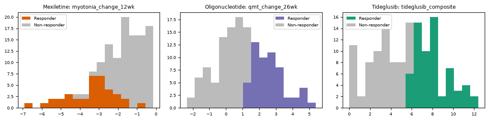
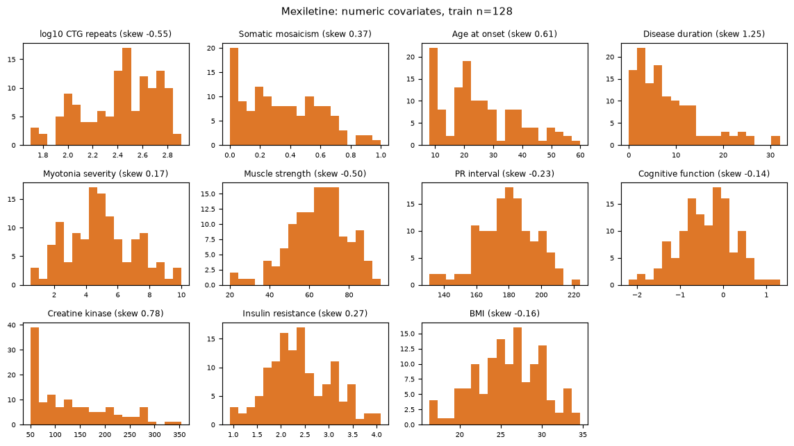
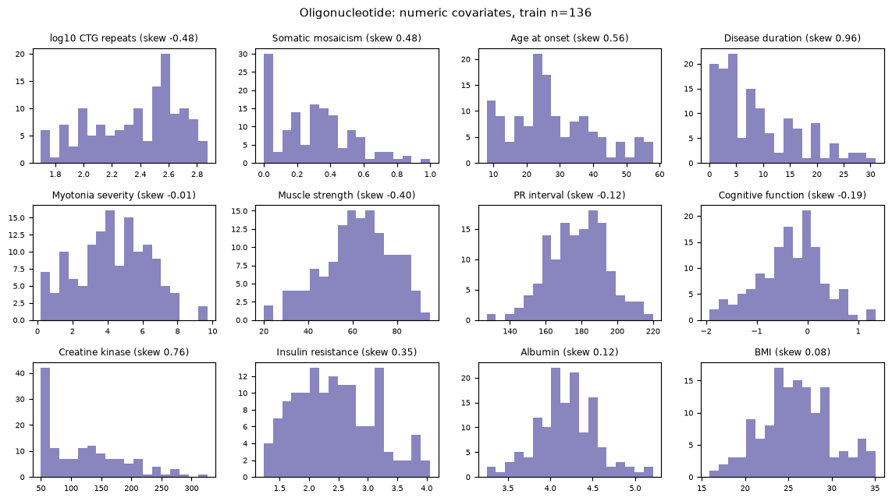
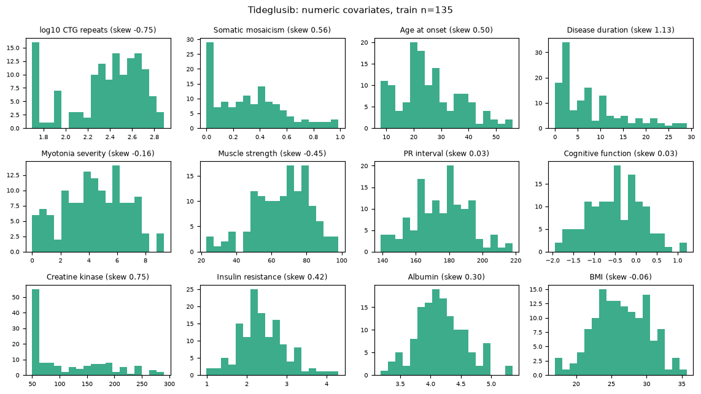
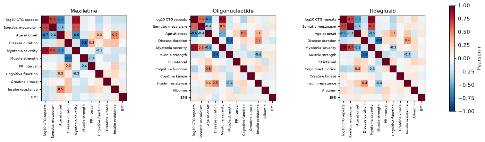

| Kickoff says | What we did | Where |
|---|---|---|
| Structure: each patient belongs to one arm; the outcome exists only for that arm | Arms analysed separately; split file has one row per patient (no patient appears in two arms: True); each arm's own outcome only | 1.1 |
| Distributions: ranges, skew, outliers of the numeric covariates | Histograms, min/median/max, skew and 1.5-IQR outlier counts per arm (12 numeric columns; the kickoff slide says 13, see 1.2) | 1.3 |
| Covariate variation: summarise every covariate within each arm | Mean (SD) per arm side by side, plus 0/1 dummy prevalences | 1.3 |
| Relationships: correlated covariates and class balance of the responder label | Covariate-covariate correlation heatmap and |r| >= 0.5 pairs; responder share per arm | 1.4 |
| Once split, explore the training data only | Every number and figure here is computed from the TRAIN rows (features_train_*.csv); test rows are never opened | all |
| Arm | Train patients | Continuous outcome | Better means | Responders (train) | Numeric covariates | 0/1 dummy columns |
|---|---|---|---|---|---|---|
| Mexiletine | 128 | myotonia_change_12wk | lower (more negative) = better | 37 (29%) | 11 | 8 |
| Oligonucleotide | 136 | qmt_change_26wk | higher = better | 56 (41%) | 12 | 8 |
| Tideglusib | 135 | tideglusib_composite | higher = better | 65 (48%) | 12 | 8 |
Each patient is in exactly one treatment arm and has an outcome only for that arm, so the three arms are three separate problems with their own outcome, units and direction of benefit. RMSE and MAE are therefore never compared across arms.
Both outcomes the kickoff names are modelled per arm. The continuous efficacy outcome is the primary target: it keeps all the information, and the kickoff recommends it as the natural first step for the linear methods. The responder label (binary) is modelled in parallel because the kickoff asks for classification metrics; it is a dichotomised version of the same response, so it carries less information. Train outcome distributions, coloured by label:

The kickoff slide speaks of 13 numeric covariates. Age is dropped because age = age_at_onset + disease_duration holds exactly in the data (verified, max absolute difference 0; see compute_notes), so keeping it would add an exactly collinear column. CTG repeat count enters as log10. That leaves 12 numeric columns; in Mexiletine albumin is constant in the train rows and is dropped too (11 numeric). The 0/1 dummies (8 columns) are sex, cataracts, family history (Yes / Unknown), smoking (Former / Current) and phenotype (adult / juvenile onset).
Mean (SD) per arm
| Covariate (mean (SD), train) | Mexiletine | Oligonucleotide | Tideglusib |
|---|---|---|---|
| log10 CTG repeats | 2.42 (0.29) | 2.36 (0.31) | 2.36 (0.33) |
| Somatic mosaicism | 0.35 (0.25) | 0.30 (0.23) | 0.32 (0.26) |
| Age at onset | 25.24 (12.85) | 27.73 (12.63) | 25.81 (10.99) |
| Disease duration | 8.18 (6.90) | 8.85 (7.38) | 7.90 (7.11) |
| Myotonia severity | 4.95 (2.11) | 4.31 (2.05) | 4.43 (2.25) |
| Muscle strength | 64.70 (14.57) | 62.18 (15.48) | 66.33 (15.92) |
| PR interval | 179.16 (17.05) | 177.67 (16.18) | 175.56 (16.67) |
| Cognitive function | -0.38 (0.64) | -0.32 (0.64) | -0.49 (0.64) |
| Creatine kinase | 129.79 (77.97) | 120.52 (66.19) | 113.56 (70.06) |
| Insulin resistance | 2.41 (0.67) | 2.45 (0.67) | 2.38 (0.58) |
| BMI | 25.92 (4.05) | 25.97 (4.04) | 26.40 (3.81) |
| Albumin | constant in train: dropped | 4.19 (0.35) | 4.16 (0.40) |
Dummy prevalence in train
| Column | Mexiletine | Oligonucleotide | Tideglusib |
|---|---|---|---|
| Sex = Male | 55% | 57% | 49% |
| Cataracts = Yes | 26% | 25% | 25% |
| Family history = Yes | 64% | 67% | 73% |
| Family history = Unknown | 27% | 20% | 19% |
| Smoking = Former | 30% | 26% | 33% |
| Smoking = Current | 18% | 21% | 15% |
| Phenotype = adult onset | 56% | 61% | 65% |
| Phenotype = juvenile onset | 25% | 18% | 19% |



| Arm | Covariate | Min | Median | Max | Skew | Outliers (1.5 IQR) |
|---|---|---|---|---|---|---|
| Mexiletine | log10 CTG repeats | 1.70 | 2.48 | 2.91 | -0.55 | 0 |
| Mexiletine | Somatic mosaicism | 0.00 | 0.32 | 1.00 | 0.37 | 0 |
| Mexiletine | Age at onset | 8.00 | 22.50 | 60.00 | 0.61 | 0 |
| Mexiletine | Disease duration | 0.00 | 7.00 | 32.00 | 1.25 | 7 |
| Mexiletine | Myotonia severity | 0.50 | 4.90 | 10.00 | 0.17 | 0 |
| Mexiletine | Muscle strength | 20.00 | 65.00 | 96.00 | -0.50 | 4 |
| Mexiletine | PR interval | 131.00 | 179.00 | 224.00 | -0.23 | 3 |
| Mexiletine | Cognitive function | -2.19 | -0.36 | 1.31 | -0.14 | 2 |
| Mexiletine | Creatine kinase | 50.00 | 111.50 | 354.00 | 0.78 | 0 |
| Mexiletine | Insulin resistance | 0.93 | 2.34 | 4.09 | 0.27 | 0 |
| Mexiletine | BMI | 16.30 | 25.95 | 34.70 | -0.16 | 0 |
| Oligonucleotide | log10 CTG repeats | 1.70 | 2.44 | 2.87 | -0.48 | 0 |
| Oligonucleotide | Somatic mosaicism | 0.00 | 0.30 | 1.00 | 0.48 | 1 |
| Oligonucleotide | Age at onset | 8.00 | 25.00 | 58.00 | 0.56 | 0 |
| Oligonucleotide | Disease duration | 0.00 | 7.00 | 31.00 | 0.96 | 1 |
| Oligonucleotide | Myotonia severity | 0.20 | 4.30 | 9.70 | -0.01 | 0 |
| Oligonucleotide | Muscle strength | 20.00 | 63.00 | 95.00 | -0.40 | 2 |
| Oligonucleotide | PR interval | 127.00 | 178.50 | 220.00 | -0.12 | 1 |
| Oligonucleotide | Cognitive function | -1.93 | -0.30 | 1.35 | -0.19 | 2 |
| Oligonucleotide | Creatine kinase | 50.00 | 113.00 | 326.00 | 0.76 | 1 |
| Oligonucleotide | Insulin resistance | 1.23 | 2.38 | 4.06 | 0.35 | 0 |
| Oligonucleotide | Albumin | 3.25 | 4.19 | 5.21 | 0.12 | 4 |
| Oligonucleotide | BMI | 15.90 | 25.85 | 35.10 | 0.08 | 0 |
| Tideglusib | log10 CTG repeats | 1.70 | 2.44 | 2.89 | -0.75 | 0 |
| Tideglusib | Somatic mosaicism | 0.00 | 0.30 | 0.98 | 0.56 | 0 |
| Tideglusib | Age at onset | 8.00 | 23.00 | 56.00 | 0.50 | 2 |
| Tideglusib | Disease duration | 0.00 | 6.00 | 29.00 | 1.13 | 5 |
| Tideglusib | Myotonia severity | 0.00 | 4.50 | 9.30 | -0.16 | 0 |
| Tideglusib | Muscle strength | 23.00 | 68.00 | 98.00 | -0.45 | 0 |
| Tideglusib | PR interval | 139.00 | 176.00 | 218.00 | 0.03 | 0 |
| Tideglusib | Cognitive function | -1.94 | -0.49 | 1.22 | 0.03 | 0 |
| Tideglusib | Creatine kinase | 50.00 | 86.00 | 290.00 | 0.75 | 0 |
| Tideglusib | Insulin resistance | 0.99 | 2.31 | 4.29 | 0.42 | 4 |
| Tideglusib | Albumin | 3.18 | 4.13 | 5.35 | 0.30 | 2 |
| Tideglusib | BMI | 17.00 | 26.20 | 35.70 | -0.06 | 0 |
Skew ranges from about -0.7 to +1.3 (disease duration is the most right-skewed); the 1.5 IQR rule flags 12-16 values per arm. These are plausible clinical values, so nothing is removed (Step 3).

Pairs with |r| >= 0.5 across the full design (numeric + dummy columns), train
| Arm | Pair | r |
|---|---|---|
| Mexiletine | log10 CTG repeats / Myotonia severity | 0.86 |
| Mexiletine | Family history = Yes / Family history = Unknown | -0.80 |
| Mexiletine | Disease duration / Muscle strength | -0.76 |
| Mexiletine | Age at onset / Phenotype = juvenile onset | -0.69 |
| Mexiletine | log10 CTG repeats / Somatic mosaicism | 0.68 |
| Mexiletine | log10 CTG repeats / Age at onset | -0.67 |
| Mexiletine | Phenotype = adult onset / Phenotype = juvenile onset | -0.65 |
| Mexiletine | Age at onset / Myotonia severity | -0.64 |
| Mexiletine | Somatic mosaicism / Myotonia severity | 0.63 |
| Mexiletine | Myotonia severity / Phenotype = juvenile onset | 0.53 |
| Mexiletine | log10 CTG repeats / Phenotype = juvenile onset | 0.52 |
| Oligonucleotide | log10 CTG repeats / Myotonia severity | 0.84 |
| Oligonucleotide | Disease duration / Muscle strength | -0.79 |
| Oligonucleotide | Family history = Yes / Family history = Unknown | -0.71 |
| Oligonucleotide | Age at onset / Phenotype = juvenile onset | -0.63 |
| Oligonucleotide | log10 CTG repeats / Age at onset | -0.63 |
| Oligonucleotide | Phenotype = adult onset / Phenotype = juvenile onset | -0.59 |
| Oligonucleotide | log10 CTG repeats / Somatic mosaicism | 0.57 |
| Oligonucleotide | Cognitive function / Phenotype = juvenile onset | -0.51 |
| Oligonucleotide | Age at onset / Cognitive function | 0.50 |
| Tideglusib | log10 CTG repeats / Myotonia severity | 0.90 |
| Tideglusib | Family history = Yes / Family history = Unknown | -0.79 |
| Tideglusib | Disease duration / Muscle strength | -0.79 |
| Tideglusib | log10 CTG repeats / Somatic mosaicism | 0.68 |
| Tideglusib | Somatic mosaicism / Myotonia severity | 0.67 |
| Tideglusib | Phenotype = adult onset / Phenotype = juvenile onset | -0.65 |
| Tideglusib | Age at onset / Phenotype = juvenile onset | -0.64 |
| Tideglusib | log10 CTG repeats / Age at onset | -0.57 |
| Tideglusib | Age at onset / Myotonia severity | -0.51 |
Responder-label class balance (train)
| Arm | Train patients | Responders (train) |
|---|---|---|
| Mexiletine | 128 | 37 (29%) |
| Oligonucleotide | 136 | 56 (41%) |
| Tideglusib | 135 | 65 (48%) |
Collinearity is real: log10 CTG and myotonia severity correlate at r = 0.84-0.90 in every arm, and disease duration with muscle strength at r = -0.76 to -0.79. Class balance: responders are the minority in every arm (29%, 41%, 48%); this is why Step 6 pairs accuracy with recall and precision. No covariate-outcome relationships are shown on this page: that would be selection, which belongs to Steps 4-5.
AI tool disclosure (kickoff checklist): Claude Code (Anthropic) was used to write the analysis code (R and Python), to generate these pages, and to draft the text; every number on these pages is read from results/*.csv produced by the scripts in pdf_pipeline/src. Data are simulated; results do not describe real patients or approved therapies.